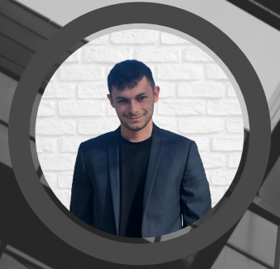

Qui suis-je ?
Je suis un jeune plein d'ambition qui compte bien arriver à ses fins. Je suis quelqu'un qui est à l'écoute et qui adore travailler dans la bonne ambiance. Je sais m'adapter à toute situation et ce, même dans les moments de stress. Le web Marketing m'attire depuis un bon moment et je suis prêt à me lancer dans un projet concret.
Coordonnées
30bis rue Averseng-Delorme, 31000 Toulouseeddy.bruyere01@gmail.com0781094494